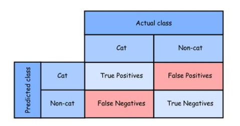
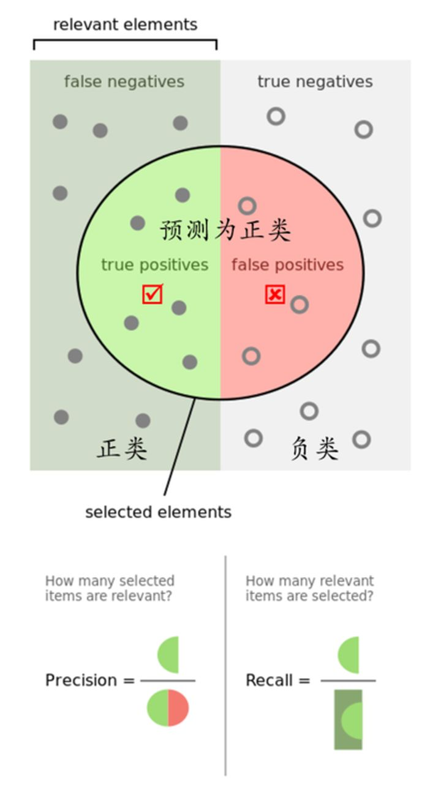
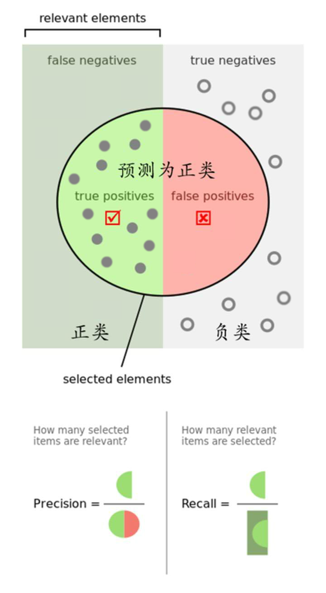

<!DOCTYPE lake>

<h1 data-lake-id="a4bf4463" id="a4bf4463"><span data-lake-id="ub48cb88e" id="ub48cb88e">机器学习-各个指标含义</span></h1><p data-lake-id="ua791cde9" id="ua791cde9"><br/></p><p data-lake-id="ubb946963" id="ubb946963"><br/></p><h3 data-lake-id="44c3b0f2" id="44c3b0f2"><span data-lake-id="u6b8bdc69" id="u6b8bdc69">一些基本概念：</span></h3><p data-lake-id="uf27fcac5" id="uf27fcac5"><br/></p><p data-lake-id="u128080e1" id="u128080e1"><span data-lake-id="uc37c7c8b" id="uc37c7c8b">准确率(Accuracy)</span></p><p data-lake-id="u54a88eb1" id="u54a88eb1"><br/></p><p data-lake-id="ub2ba3517" id="ub2ba3517"><span data-lake-id="u3907f3df" id="u3907f3df">精确率(Precision)：又称查准率</span></p><p data-lake-id="u623bc9be" id="u623bc9be"><br/></p><p data-lake-id="ua15f710a" id="ua15f710a"><span data-lake-id="u1324e894" id="u1324e894">召回率(Recall)：又称为查全率</span></p><p data-lake-id="u120437d8" id="u120437d8"><br/></p><p data-lake-id="u5b071468" id="u5b071468"><span data-lake-id="u9f38e004" id="u9f38e004">AP</span></p><p data-lake-id="u480f29e8" id="u480f29e8"><br/></p><p data-lake-id="ubce81199" id="ubce81199"><span data-lake-id="u3e6435ce" id="u3e6435ce">mAP@.5</span></p><p data-lake-id="u0b27bc4a" id="u0b27bc4a"><br/></p><p data-lake-id="u335be56e" id="u335be56e"><span data-lake-id="uc6f6f2b3" id="uc6f6f2b3">mAP@.5：95</span></p><p data-lake-id="u97bd71f9" id="u97bd71f9"><br/></p><p data-lake-id="ub60a849c" id="ub60a849c"><span data-lake-id="uea11d0b4" id="uea11d0b4">Speed：inference/NMS/total 推理耗时/非极大值抑制耗时/总耗时</span></p><p data-lake-id="u809bee27" id="u809bee27"><br/></p><p data-lake-id="u22ef01e0" id="u22ef01e0"><span data-lake-id="u675b7411" id="u675b7411">F值（F-Measure）</span></p><p data-lake-id="u2c631c9a" id="u2c631c9a"><br/></p><p data-lake-id="u991bba89" id="u991bba89"><span data-lake-id="ua4edc040" id="ua4edc040">IoU</span></p><p data-lake-id="u7c18854d" id="u7c18854d"><br/></p><p data-lake-id="u622d0dd6" id="u622d0dd6"><span data-lake-id="ud2bcba5a" id="ud2bcba5a">ROC曲线（ROC Curve）</span></p><p data-lake-id="uecc6271d" id="uecc6271d"><br/></p><p data-lake-id="u74b0084c" id="u74b0084c"><span data-lake-id="uc02e285a" id="uc02e285a">PR曲线（PR Curve）</span></p><p data-lake-id="ue72a56d1" id="ue72a56d1"><br/></p><p data-lake-id="u44bbe46e" id="u44bbe46e"><span data-lake-id="u61a1177c" id="u61a1177c">AUC</span></p><p data-lake-id="ucbc7f7ac" id="ucbc7f7ac"><br/></p><p data-lake-id="uc3429c20" id="uc3429c20"><span data-lake-id="ubb3bf626" id="ubb3bf626">MAE、MSE</span></p><p data-lake-id="ub8effc28" id="ub8effc28"><br/></p><h3 data-lake-id="b85fe04c" id="b85fe04c"><span data-lake-id="u1f5fed17" id="u1f5fed17">首先了解准确率，精确率，召回率</span></h3><p data-lake-id="u13091cd3" id="u13091cd3"></p><p data-lake-id="uc61e8d49" id="uc61e8d49"></p><p data-lake-id="u13d8da41" id="u13d8da41"><br/></p><p data-lake-id="u67cb302c" id="u67cb302c"><span data-lake-id="ud795edf2" id="ud795edf2">根据一张图片中是否包含猫，将分类器以Cat的和Non-cat形式表示</span></p><p data-lake-id="u83383984" id="u83383984"><br/></p><p data-lake-id="ub5b5a3bd" id="ub5b5a3bd"><span data-lake-id="ue7306eb1" id="ue7306eb1">Tp（True Positive）表示预测的是Cat，并且实际类别就是Cat（真正，预测成功）</span></p><p data-lake-id="u43c9f653" id="u43c9f653"><br/></p><p data-lake-id="u1874d7df" id="u1874d7df"><span data-lake-id="u9fdbda4b" id="u9fdbda4b">Tn（True Negative）表示预测不是Cat，并且实际类别也不是Cat（真负，预测成功）</span></p><p data-lake-id="uedd3cbe1" id="uedd3cbe1"><br/></p><p data-lake-id="u98247d56" id="u98247d56"><span data-lake-id="uccdbd8a9" id="uccdbd8a9">Fp（False Positive）表示预测的是Cat，但实际类别不是Cat（假正，预测失败）</span></p><p data-lake-id="ueae0fecc" id="ueae0fecc"><br/></p><p data-lake-id="u825b7cde" id="u825b7cde"><span data-lake-id="ue0c9badb" id="ue0c9badb">Fn（False Negative）表示预测不是Cat，但实际类别是Cat（假负，预测失败）</span></p><p data-lake-id="u273c1089" id="u273c1089"><br/></p><p data-lake-id="u06f37ebd" id="u06f37ebd"><strong><span data-lake-id="u745e6f9a" id="u745e6f9a">准确率(Accuracy)</span></strong><span data-lake-id="u4c507ba9" id="u4c507ba9">：是预测对的结果占所有数据的比例，理想值越接近1越好。即（Tp + Tn）占所有的比例。（不管是不是猫，都被你猜对了的总数），要分清楚猫和狗</span></p><p data-lake-id="ud96688d3" id="ud96688d3"><br/></p><p data-lake-id="ubd104d4a" id="ubd104d4a" style="text-align: center"><a class="yuque-card-link" href="https://www.yuque.com/api/services/graph/generate_redirect/latex?A%20%3D%5Cdfrac%7BT_%7Bp%7D%2BT_%7Bn%7D%7D%7BT_%7Bp%7D%2BT_n%2BF_p%2BF_%7Bn%7D%7D%0A">math：math</a></p><p data-lake-id="u7dd1df2b" id="u7dd1df2b"><br/></p><p data-lake-id="uf7c27ac8" id="uf7c27ac8"><strong><span data-lake-id="u030ff860" id="u030ff860">精确率(Precision)</span></strong><span data-lake-id="u0a02b39f" id="u0a02b39f">：又称查准率，针对预测的结果而言，即预测为正的样本（Tp + Fp）中，有多少是真的正样本Tp，而那些Fp越少越好最好是0，显然这个值越接近1越好。（猜的这堆样本里，有多少真的是猫）,不要让狗混进来</span></p><p data-lake-id="ubd8c2893" id="ubd8c2893"><br/></p><p data-lake-id="uc3420a81" id="uc3420a81" style="text-align: center"><a class="yuque-card-link" href="https://www.yuque.com/api/services/graph/generate_redirect/latex?P%20%3D%5Cdfrac%7BT_%7Bp%7D%7D%7BT_%7Bp%7D%2BF_%7Bp%7D%7D%0A">math：math</a></p><p data-lake-id="u826e283e" id="u826e283e"><br/></p><p data-lake-id="uf162f2a9" id="uf162f2a9"><strong><span data-lake-id="u554afe09" id="u554afe09">召回率(Recall)</span></strong><span data-lake-id="u5518f02e" id="u5518f02e">：又称为查全率，针对原来的所有样本而言，即有多少正样本被预测正确了。那么分母为原来样本中所有正样本个数（Tp + Fn），那些预测为负的正样本Fn越少越好，即召回率R越接近1越好。（有多少只猫被你找回来了），不要让可怜的小猫在外流浪</span></p><p data-lake-id="u71874c91" id="u71874c91"><br/></p><p data-lake-id="u6458c37b" id="u6458c37b" style="text-align: center"><a class="yuque-card-link" href="https://www.yuque.com/api/services/graph/generate_redirect/latex?R%20%3D%5Cdfrac%7BT_%7Bp%7D%7D%7BT_%7Bp%7D%2BF_%7Bn%7D%7D%0A">math：math</a></p><p data-lake-id="u6ee32f33" id="u6ee32f33"><br/></p><p data-lake-id="u2f37927a" id="u2f37927a"></p><p data-lake-id="u3e975e99" id="u3e975e99"><br/></p><ol list="u14dacfaf"><li data-lake-id="u900845f5" fid="u1059aa41" id="u900845f5"><span data-lake-id="u2542820c" id="u2542820c">普遍状态</span></li></ol><p data-lake-id="uf2ebe4aa" id="uf2ebe4aa"></p><p data-lake-id="u66dd0ad6" id="u66dd0ad6"></p><p data-lake-id="u88b4da4e" id="u88b4da4e"><br/></p><ol list="u0c7c71e8" start="2"><li data-lake-id="ue760fa4a" fid="u59c188f1" id="ue760fa4a"><span data-lake-id="u1ca9e87b" id="u1ca9e87b">理想状态</span></li></ol><p data-lake-id="u819acde6" id="u819acde6"></p><p data-lake-id="u9cb084cb" id="u9cb084cb"><span data-lake-id="ud169954e" id="ud169954e">如上图1：</span></p><p data-lake-id="uc8b9232a" id="uc8b9232a"><br/></p><ul list="u8e8b28ce"><li data-lake-id="u39f584d7" fid="u4502ac4d" id="u39f584d7"><span data-lake-id="u883e4dcb" id="u883e4dcb">普遍状态，即Precision和Recall皆为0-1之间的值</span></li></ul><ul list="ua2672d50"><li data-lake-id="uf2f36920" fid="ua9cb01e8" id="uf2f36920"><span data-lake-id="u42d9e058" id="u42d9e058">精确率Precision为绿色半圆占整个圆的比例</span></li></ul><ul list="u1df8e535"><li data-lake-id="u1ef3fe45" fid="u4045deea" id="u1ef3fe45"><span data-lake-id="uab8ce592" id="uab8ce592">召回率Recall为绿色半圆占左侧长方形的比例</span></li></ul><p data-lake-id="u49951de2" id="u49951de2"><br/></p><p data-lake-id="u39429bd3" id="u39429bd3"><span data-lake-id="u65ed9d95" id="u65ed9d95">如上图2：</span></p><p data-lake-id="u5a424c35" id="u5a424c35"><br/></p><ul list="ue27da26b"><li data-lake-id="u9405f0cf" fid="uc6816bcd" id="u9405f0cf"><span data-lake-id="ud48a6fe8" id="ud48a6fe8">理想状态，即Precision和Recall皆为1</span></li></ul><ul list="u63257b35"><li data-lake-id="u74c16d35" fid="u732d33f8" id="u74c16d35"><span data-lake-id="u918f3b07" id="u918f3b07">如果圆形的右侧红色部分为0，则精确率Precision就会是1。</span></li></ul><ul list="u9254f062"><li data-lake-id="u0da5f697" fid="udcdc1d0b" id="u0da5f697"><span data-lake-id="ud9008d45" id="ud9008d45">如果左侧半圆中的点能把正类长方形的所有点包含进去，那么Recall召回率就会是1。</span></li></ul><p data-lake-id="uaae59ef4" id="uaae59ef4"><br/></p><p data-lake-id="ub33a50a8" id="ub33a50a8"><strong><span data-lake-id="u873f9fc3" id="u873f9fc3">F值</span></strong></p><p data-lake-id="ua98f31b2" id="ua98f31b2"><br/></p><p data-lake-id="u68ffced0" id="u68ffced0"><span data-lake-id="u6b895351" id="u6b895351">为了统一</span><strong><span data-lake-id="u6cff158d" id="u6cff158d">精确率(Precision)和召回率(Recall)，</span></strong><span data-lake-id="ucc8ab276" id="ucc8ab276">我们用一个F值统一描述：</span></p><p data-lake-id="u6ed76ae0" id="u6ed76ae0"><br/></p><p data-lake-id="u4be21487" id="u4be21487" style="text-align: center"><a class="yuque-card-link" href="https://www.yuque.com/api/services/graph/generate_redirect/latex?F%3D%5Cdfrac%7BP%20%5Ctimes%20R%5Ctimes%202%7D%7BP%2BR%7D%0A">math：math</a></p><p data-lake-id="uec1cfbb6" id="uec1cfbb6"><br/></p><p data-lake-id="u5c53ae5f" id="u5c53ae5f"><span data-lake-id="u35c025be" id="u35c025be">可以理解为即希望找到目标里不要包含狗，又希望尽可能多的把猫找出来。理想结果仍然是1</span></p><p data-lake-id="u861b691a" id="u861b691a"><br/></p><p data-lake-id="u158736a2" id="u158736a2"><strong><span data-lake-id="uf53c1cb4" id="uf53c1cb4">举个栗子</span></strong></p><p data-lake-id="u8829bf16" id="u8829bf16"><br/></p><blockquote data-lake-id="u83231046" id="u83231046"><p data-lake-id="ub63fad85" id="ub63fad85"><span data-lake-id="ub81e0691" id="ub81e0691">假设我们手上有60个正样本（Cat），40个负样本（Dog），我们要找出所有的正样本（Cat），系统查找出50个（包含Cat和Dog），其中只有40个是真正的正样本（Cat），计算上述各指标。</span></p></blockquote><p data-lake-id="u1aa65276" id="u1aa65276"><br/></p><ul list="u9336d042"><li data-lake-id="u5b1ec71d" fid="u395c3b44" id="u5b1ec71d"><span data-lake-id="u926b92ee" id="u926b92ee">TP: 将正类预测为正类数 40</span></li></ul><ul list="ua8b56807"><li data-lake-id="ubdcf8718" fid="u6fead093" id="ubdcf8718"><span data-lake-id="u63a2d92c" id="u63a2d92c">FN: 将正类预测为负类数 20</span></li></ul><ul list="u77227179"><li data-lake-id="u8f97dff7" fid="u7eceb14b" id="u8f97dff7"><span data-lake-id="u12dc20e9" id="u12dc20e9">FP: 将负类预测为正类数 10</span></li></ul><ul list="ua8bb8b43"><li data-lake-id="u78adcf24" fid="ua7263843" id="u78adcf24"><span data-lake-id="udde8d4df" id="udde8d4df">TN: 将负类预测为负类数 30</span></li></ul><p data-lake-id="u08139e84" id="u08139e84"><br/></p><p data-lake-id="u0a9a0453" id="u0a9a0453"><strong><span data-lake-id="u25648530" id="u25648530">准确率A</span></strong></p><p data-lake-id="u1009a3e3" id="u1009a3e3"><br/></p><p data-lake-id="uebbde721" id="uebbde721"><span data-lake-id="u435c492f" id="u435c492f">(accuracy) = 预测对的/所有 = (TP+TN)/(TP+FN+FP+TN) = 70%</span></p><p data-lake-id="u5ddc7f32" id="u5ddc7f32"><br/></p><p data-lake-id="uc2682b32" id="uc2682b32"><strong><span data-lake-id="u8c143b88" id="u8c143b88">精确率P</span></strong></p><p data-lake-id="uf82b61c4" id="uf82b61c4"><br/></p><p data-lake-id="u05f1ce0e" id="u05f1ce0e"><span data-lake-id="u79f87fac" id="u79f87fac">(precision) = TP/(TP+FP) = 80%</span></p><p data-lake-id="u01bde3be" id="u01bde3be"><br/></p><p data-lake-id="u7e2784ae" id="u7e2784ae"><strong><span data-lake-id="uc0b16054" id="uc0b16054">召回率R</span></strong></p><p data-lake-id="u9e13c7fc" id="u9e13c7fc"><br/></p><p data-lake-id="u04f1d790" id="u04f1d790"><span data-lake-id="uc6208e0c" id="uc6208e0c">(recall) = TP/(TP+FN) = 2/3 ≈ 0.66</span></p><p data-lake-id="ub82ed267" id="ub82ed267"><br/></p><p data-lake-id="u8699095e" id="u8699095e"><strong><span data-lake-id="u2fbcbf81" id="u2fbcbf81">F值</span></strong></p><p data-lake-id="ub0c03ccb" id="ub0c03ccb"><br/></p><p data-lake-id="ueaac5875" id="ueaac5875"><span data-lake-id="ucf3f503d" id="ucf3f503d">F = P x R x 2 / (P + R) = 8/11 ≈ 0.727</span></p><p data-lake-id="u1867c8de" id="u1867c8de"><br/></p><p data-lake-id="u0dfd6f23" id="u0dfd6f23"><strong><span data-lake-id="u06d060e3" id="u06d060e3">AP</span></strong></p><p data-lake-id="u27d822a2" id="u27d822a2"><br/></p><p data-lake-id="u67e460e8" id="u67e460e8"><span data-lake-id="u03685e69" id="u03685e69">AP(average precision 平均精度)：AP是计算单类别的模型平均准确度。对于目标检测任务，每一个类都可以计算出其Precision和Recall，每个类都可以得到一条P-R曲线，曲线下的面积就是AP的值。如果一个算法的AP值较大，也就是P-R曲线（Precision-Recall Curve）下的面积比较大，可以认为此算法</span><strong><span data-lake-id="uaddf66bd" id="uaddf66bd">查准率</span></strong><span data-lake-id="uea0f0677" id="uea0f0677">和</span><strong><span data-lake-id="u60c9a562" id="u60c9a562">查全率</span></strong><span data-lake-id="u85115941" id="u85115941">整体上相对较好。</span></p><p data-lake-id="u49b4dfde" id="u49b4dfde"><br/></p><p data-lake-id="ue2b0911c" id="ue2b0911c"><span data-lake-id="uebffca30" id="uebffca30">较好的意思对应猫狗的例子，就是所有数据里大部分猫都在你查找的结果里，并且你的结果里狗（非猫）很少（找错的情况少）。</span></p><p data-lake-id="u2e7f81ee" id="u2e7f81ee"><br/></p><p data-lake-id="ub1f1c7b5" id="ub1f1c7b5"><strong><span data-lake-id="u582305fb" id="u582305fb">AP是Precision-Recall Curve(PRC)下面的面积！！！</span></strong></p><p data-lake-id="u4410637f" id="u4410637f"><br/></p><p data-lake-id="ua69c1762" id="ua69c1762"></p><p data-lake-id="u3bc2aca8" id="u3bc2aca8"><br/></p><blockquote data-lake-id="u94d14437" id="u94d14437"><p data-lake-id="u29e86632" id="u29e86632"><span data-lake-id="uf16e1690" id="uf16e1690">PRC怎么看：先看平滑不平滑（蓝线明显好些），在看谁上谁下（同一测试集上），一般来说，上面的比下面的好（绿线比红线好）。</span></p></blockquote><p data-lake-id="u33dc8943" id="u33dc8943"><br/></p><p data-lake-id="uef6188a2" id="uef6188a2"><strong><span data-lake-id="u82eead63" id="u82eead63">mAP</span></strong><a data-lake-id="ua1ee81e6" href="/0.5 " id="ua1ee81e6"><strong><span data-lake-id="ud5945533" id="ud5945533">@0.5 </span></strong></a><strong><span data-lake-id="u415fb9e3" id="u415fb9e3"> </span></strong><span data-lake-id="u6853f8ac" id="u6853f8ac">：</span></p><p data-lake-id="u8497d1e0" id="u8497d1e0"><br/></p><p data-lake-id="u00435105" id="u00435105"><span data-lake-id="u5a002524" id="u5a002524">mean Average Precision 给每一类分别计算AP，然后做mean平均</span></p><p data-lake-id="u0425f162" id="u0425f162"><br/></p><p data-lake-id="u9ebe816e" id="u9ebe816e"><span data-lake-id="ua969d628" id="ua969d628">Pascal VOC(VOC2007 &amp; VOC2012)是评测目标检测算法的常用数据集，VOC数据集使用一个固定的IoU阈值0.5来计算AP值。 所以VOC数据集中mAP通常标记为</span></p><p data-lake-id="u8951b48c" id="u8951b48c"><br/></p><p data-lake-id="u3e82594b" id="u3e82594b"><code data-lake-id="u82259075" id="u82259075"><span data-lake-id="uc03ebc9a" id="uc03ebc9a">mAP@IoU=0.5</span></code><span data-lake-id="ud324128b" id="ud324128b"> 或<br/></span><code data-lake-id="u4eda1e80" id="u4eda1e80"><span data-lake-id="u6d4ab0a1" id="u6d4ab0a1">mAP@0.5</span></code><span data-lake-id="u8a1cebcd" id="u8a1cebcd"> 或<br/></span><code data-lake-id="u68ffadcb" id="u68ffadcb"><span data-lake-id="uf6ff73b7" id="uf6ff73b7">mAP_50</span></code></p><p data-lake-id="u1ae7b4d1" id="u1ae7b4d1"><br/></p><p data-lake-id="u26023779" id="u26023779"><strong><span data-lake-id="u83d88fba" id="u83d88fba">mAP@[0.5:0.95]：</span></strong></p><p data-lake-id="u2b57d814" id="u2b57d814"><br/></p><p data-lake-id="u9f049406" id="u9f049406"><span data-lake-id="uf9a62e9d" id="uf9a62e9d">但是在2014年之后，</span><strong><span data-lake-id="u4a44c89c" id="u4a44c89c">MS-COCO(Microsoft Common Objects)</span></strong><span data-lake-id="ue817456d" id="ue817456d">数据集逐渐兴起。在COCO数据集中，更关注预测框位置的准确性，AP值是针对多个IoU阈值的AP平均值，具体的就是在0.5 和0.95之间取10个IoU阈值(0.5、0.55、0.6 ..... 0.9、0.95)。在COCO 数据集中册标记为</span></p><p data-lake-id="uff9ac694" id="uff9ac694"><br/></p><p data-lake-id="u6afa5659" id="u6afa5659"><code data-lake-id="u4144f06a" id="u4144f06a"><span data-lake-id="ub09b229a" id="ub09b229a">mAP@IoU=0.5:0.05:0.95</span></code><span data-lake-id="u0f19b6d9" id="u0f19b6d9"> 或<br/></span><code data-lake-id="uc51b884e" id="uc51b884e"><span data-lake-id="u97df47b4" id="u97df47b4">mAP IoU=0.5:0.95</span></code><span data-lake-id="u294952be" id="u294952be"> 或<br/></span><code data-lake-id="u8568f73c" id="u8568f73c"><span data-lake-id="u3a1efd30" id="u3a1efd30">mAP@[0.5:0.95]</span></code><span data-lake-id="uaa1010cc" id="uaa1010cc"> 或<br/></span><code data-lake-id="u7c777ed5" id="u7c777ed5"><span data-lake-id="ue2602ce6" id="ue2602ce6">mAP@.5:.95</span></code></p><p data-lake-id="u91b9ae52" id="u91b9ae52"><br/></p><p data-lake-id="u43d304ce" id="u43d304ce"><strong><span data-lake-id="u6da4e3c9" id="u6da4e3c9">IoU</span></strong></p><p data-lake-id="u1705fefe" id="u1705fefe"><br/></p><p data-lake-id="ua0e7a23f" id="ua0e7a23f"><span data-lake-id="u2e1bf6c1" id="u2e1bf6c1">(Intersection over Union)是两个区域重叠的部分除以两个区域的集合部分得出的结果，通过设定的阈值，与这个IoU计算结果比较。</span></p><p data-lake-id="u7ee6a5e4" id="u7ee6a5e4"><br/></p><p data-lake-id="u50a21815" id="u50a21815"><span data-lake-id="u43dceac3" id="u43dceac3">下图红色框为预测包容盒，绿色框为真实包容盒</span></p><p data-lake-id="u72525e8e" id="u72525e8e"><br/></p><p data-lake-id="u12df2017" id="u12df2017"></p><p data-lake-id="u1121fabd" id="u1121fabd"><br/></p><p data-lake-id="u7c4519d7" id="u7c4519d7"></p><p data-lake-id="u27d7091f" id="u27d7091f"><br/></p><p data-lake-id="u828e8c1b" id="u828e8c1b"><strong><span data-lake-id="uacfec4b7" id="uacfec4b7">举例如下：</span></strong><span data-lake-id="ue3ce503e" id="ue3ce503e">绿色框是准确值，红色框是预测值。</span></p><p data-lake-id="ua2368ef6" id="ua2368ef6"><br/></p><p data-lake-id="uba5b6643" id="uba5b6643"></p>